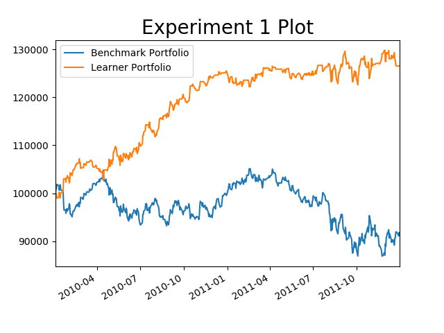
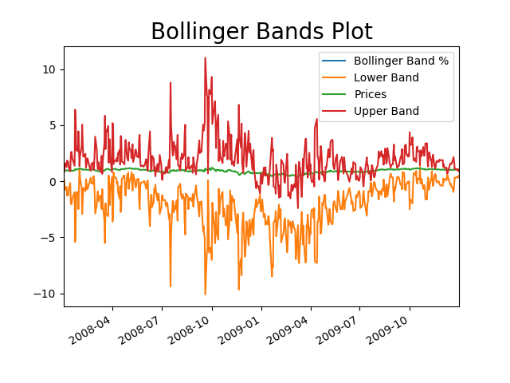
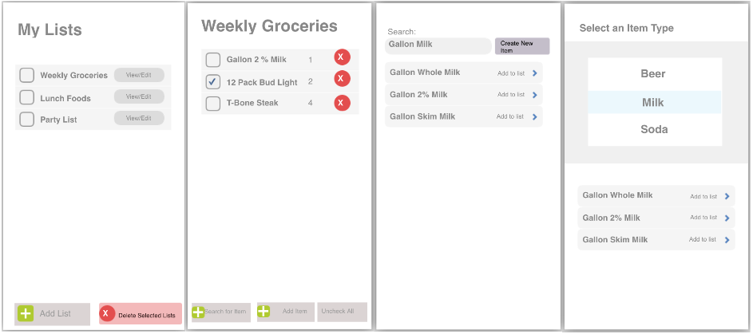

Mosaic Python
Mosaic Python is a mosaic photo generator. The application will generate mosaic photos using a series if inputted patch images. Using Python as well as computational photography principals, the applications take in a series of images as well as a final image to generate, creates a quick mapping of images to their histograms, and for each pixel group, maps the histogram of that
the portion of the final image to the best image inputted.


Strategy Learner
Using a bagged random tree learner, created a market simulation on a specific stock. Learner would buy and sell stock
based on specific parameters rolling means, Bollinger Bands, and sma. On average, the learner greatly outperformed the
benchmark.


Georgia Tech Scheduler
Creates a scheduler app that can be used (via web browser) to schedule student courses. Below is actually a video,
there is just some talking up front which is muted by default.
Shopping List
The Android Grocery List application allows users to store a shopping list.
